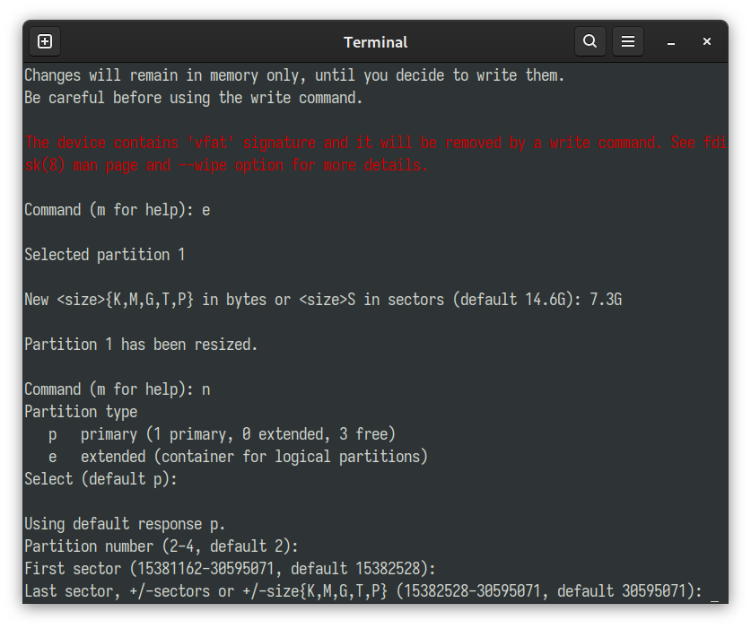
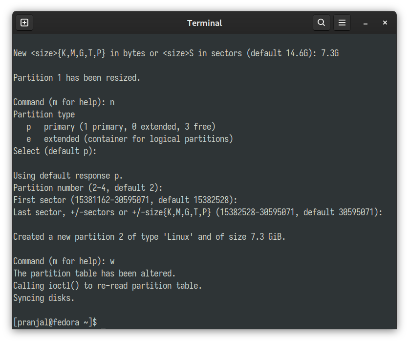

Creating and modifying disk partitions is helpful for maintaining multiple file systems on same physical drive. It can simplify the backup process and system upgradation. In this blog we will use a command line utility called fdisk to create a partition in a disk.
Partitioning Disk Using fdisk command
To partition a particular disk we will perform the following steps
- Locating the disk on which we will create a partition
- Entering into an interative fdisk tui by selecting the drive
- Making necessary operations on the drive
- Writing the operations on the drive
Step 1: Locating the drive
We can list all the installed storage disks in our Linux machine using the command
sudo fdisk -l
From the output of the command we can locate our desired disk where we want to create our new partition

In this tutorial, we will use our USB stick as the disk on which we will create a new partition, and it is listed as disk /dev/sda.
Step 2: Selecting the Disk
At first we need to unmount all the current partitions that are listed under the disk /dev/sda to perform any operations on it. Here, we have only partition that is currently listed under /dev/sda named as
/dev/sda1.
It can be unmounted with the command
sudo umount /dev/sda1
After unmounting all the partitions under the disk, we can enter the fdisk terminal user interface using the command
sudo fdisk /dev/sda
Where will need to replace /dev/sda with the disk that you will operate on
The output shows a red warning that the device contains ‘vfat’ signature and it will be erased after we perform the wrire operation, which is not that important.
Step 3: Performing Operations on The Disk
At present the existing partition consumes the whole disk space, there is no free space to create a new partition, so at first we will resize (shrink) the current partition size, using the command e
After executing the command, fdisk selects the only existing partition, and prompts us to enter the new partition size that we desire. We can enter the new size in terms of KB, MB, GB, TB or PB in bytes, or we can enter the new size in terms of sectors.
Please note that, if you have some existing data in the drive, you need to make sure that the files should fit in the new shrinked partition size, otherwise you may end up losing your data forever
After entering the new partition size, we press enter
And the old partition is resized, now the remaining space is unallocated. We will use this space to create the new partition. To create a new partition we will type in n and press enter
It prompts to choose the new partition type, in this case we will create a primary partition. As the default selected partition type is primary partition, just press enter
Next it prompts us to enter the partition number, as this is our 2nd partition in the disk, press enter to choose partition number = 2
Now we have to choose the starting point (or first sector) from which the physical address of second partition starts, we will go with the default option and press enter

Next, we have to enter the last sector (or the ending point) of our new partition, and to include all the free space availabe on the disk in our new partition we will press enter to go with the default option
And our new partition has been created, to apply all this operation on the disk, we need to write these operations
Step 4: Writing The Operations
To apply the operations and make the changes on the disk we need to write the operations, shown in step 3. And it is done by entering the command w and press enter

Voila! we have created a new partition in our USB Disk. Now to verify the process, we can again run the command
sudo fdisk -l
which gives us all the disk and partition data of installed disks
From the output it can be seen that in our disk /dev/sda we have 2 partitions -
/dev/sda1the old partition/dev/sda2the new partition
So successfuly we have created a new parition but currently the partition has no file system type, so we have to format the new partition in our desired file system.
To format the drive in FAT32 file system, we have to execute the following commands
sudo umount /dev/sda2
sudo mkfs.vfat /dev/sda2
And to check the filesystem format of the partition we can execute the command
sudo fsck /dev/sda2
We can see our new partition is indeed formatted in FAT (32 bit) file system and we are done creating a new partition on our USB drive from the terminal!
To format the partition in any other file system type this blog can be helpful.
Conclusion
In this blog we have shown how to create a partition in Linux using the terminal commands. It can be also done by any GUI disk utility tool like Gnome Disks or GParted etc. But doing this tasks from terminal gives you some level of satisfaction ;)